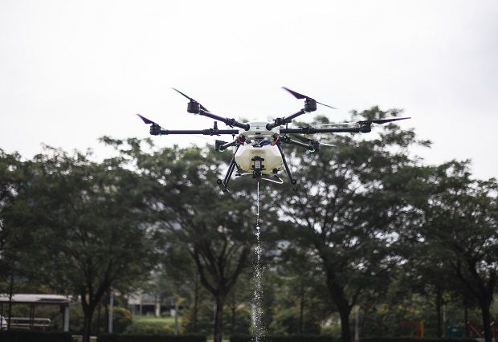

The News
F1 champion Hamilton tests positive for COVID-19
MANAMA (Reuters) - Formula One champion Lewis Hamilton has tested positive for COVID-19.
Click HERE
Mystery still shrouds Covid-19 origin
PARIS (AFP): While many scientists are racing to find vaccines to tame the spread of the coronavirus pandemic, other researchers are probing the past,
(Picture)World Health Organization (WHO) Director-General Tedros Adhanom Ghebreyesus. - Reuters
Click HERE ,to get full news, consecteturadipisicing
TECHNOLOGY: Malaysian drone tech takes to the skies
(Picture)Cutting-edge farming: Poladrone’s Oryctes Dual precision spot spraying in action. HERE
“THE drone revolution is happening right now, ” declared Poladrone founder and chief executive officer Cheong Jin Xi.
“Many industries are realising that modern drones, which excel at precision automation and efficient data collection, are able to simplify many dirty, dangerous and difficult tasks.”
Cheong added that even during the economic slowdown, there is still a growing interest in enterprise drones as companies turn to the technology for sustainable solutions.